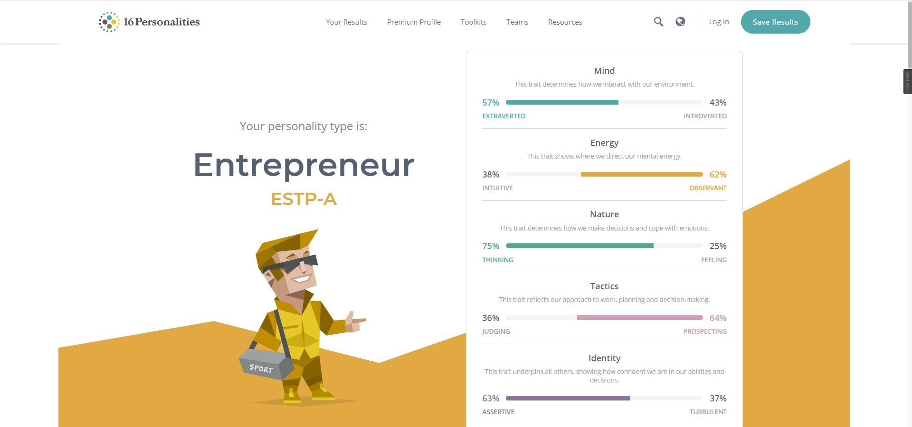
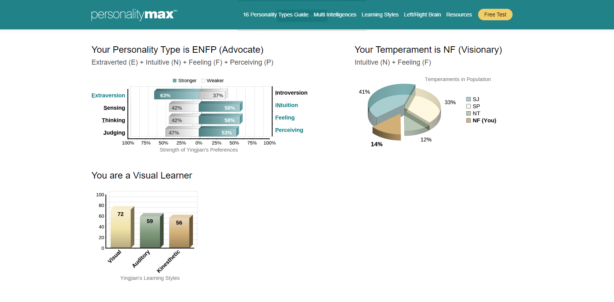
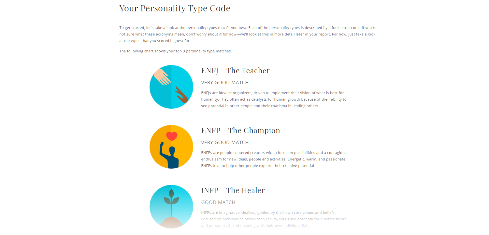

My Myers-Briggs test result 1

Learn more about my test?click here.
Introduction
Through the test, it can be seen that my character is more inclined to an entrepreneur. I am bold, rational and pragmatic. At the same time, I have good insight and often help others. I can play a guiding role in team cooperation, but at the same time, I also have weaknesses, such as unrealistic ideas and lack of patience.
As colleagues, entrepreneurs have a mentality of hard work and hard play - as long as others are trying to lose weight, they will be happy to work hard for themselves and enjoy it. They are charming and popular people, and the Internet is natural for entrepreneurs. These qualities make the entrepreneurial personality easy to get along with almost anyone.
My Myers-Briggs test result 2

Learn more about my test?click here.
Introduction
My personality type is ENFP. This is based on my four preferences: Extroversion (E), Intuition (N), Feeling (F) and Perception (P).
I am a charismatic leader. I have a passion for life. I am driven by my own values and strive to support the cause I believe in. I am visionary and creative. I will direct the team's energy outward. I am more sociable, talkative and decisive. Advocates are loving and gregarious. They are dynamic because of interaction and don't like to be alone. I usually judge by intuition. They are imaginative and idealistic. Their thinking process is abstract and complex.
I'm the one who makes decisions with heart. My heart is warm and sensitive. I can easily resonate with others because they care about others very much. Often help others in the team.
At the same time, ENFP is a social learner. They learn best when their creativity and imagination are at their disposal. They really need to please their teachers and classmates. They like to combine knowledge with the overall situation. Their processes are random, but they are interrelated.
My Myers-Briggs test result 3

Learn more about my test?click here.
Introduction
As an idealistic organizer, I am committed to realizing the vision that is most beneficial to mankind. I am often a team teacher because I have the ability to see the potential of others and the charm of leading others. At the same time, I can manage my life well and have the ability to help others. Can play a vital role in the team.
Conclusion
What do the results of these tests mean for you?
According to these tests, the company or the team can preliminarily understand my personal information. At the same time, he can also help the company to better arrange teammates in arranging team projects. Through the test, I can also show the company my own advantages, my personal characteristics and what I am good at. In addition, I can understand myself through tests.
How do you think these results may influence your behavior in a team?
The results of these surveys will affect the company's judgment of me. First of all, everyone has different characteristics. Then, when communicating and assigning work, we should assign different tasks according to everyone's different characteristics. Their cooperation may cause problems and even affect the project itself, rather than making two people with different personalities a team. Therefore, in order to make the team more efficient. These tests are 1 necessary.
How should you take this into account when forming a team?
When we build a team, we need to make full use of everyone's characteristics. For example, people with strong organizational skills are leaders. At the same time, some people are not particularly good at communication and understanding, but they also have a strong ability to focus. When they are asked to work in the R & D department or study some profound problems, their role will expand infinitely. So at this time, we need some partners with strong communication skills and empathy to communicate among groups. At the same time, we also need some team members with strong discovery ability, innovation ability, and self reflection ability to help us understand ourselves and find our problems. Therefore, a team needs people with different personalities and characteristics to combine.
For the different results and comparative analysis of each time, I can understand myself more accurately. I am an outgoing person. I am creative and can provide new ideas in group homework, but my shortcomings are also obvious. My interest in things lasts for a short time. Repeated and cumbersome work will make me lose interest quickly and lack patience with things, This is also something to pay attention to in future study.